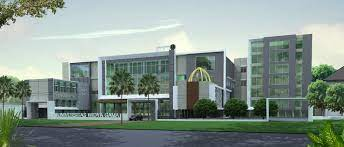

Pendaftaran Mahasiswa Baru
Pendaftaran Mahasiswa Baru Program Kelas Karyawan University Of Cambridge sebagai berikut:
I. BIAYA PENDAFTARAN
Biaya Pendaftaran Mahasiswa Baru adalah:
Program Sarjana (S1) : Rp. 250.000,-
Program Magister (S2) : Rp. 500.000,-
Gelombang I : 29 Maret – 8 Mei 2021
Gelombang II : 10 Mei – 10 Juli 2021
Gelombang III : 12 Juli – 4 September 2021
Catatan: Gelombang pendaftaran selanjutnya tidak dibuka jika kapasitas sudah penuh.
b. Kuliah Perdana : 13 September 2021.
IV. WAKTU PENDAFTARAN
Waktu pendaftaran setiap hari Senin - Sabtu pada jam :
- Senin - Sabtu : Jam 09.00 - 17.00 WIB (Wajib Menggunakan Masker).
- KAMPUS TANGERANG: Jalan Citra Raya Boulevard, Citra Raya, Tangerang
- KAMPUS BEKASI: Jalan Harapan Indah Boulevard No.4, Kota Harapan Indah, Bekasi
Membayar biaya pendaftaran
Mengisi Formulir Pendaftaran
Mengisi Form Surat Jadwal Pembayaran Angsuran Kredit Biaya Pendidikan
Menyerahkan Berkas Pendaftaran.
Berkas Pendaftaran adalah:
Materai 10.000 2 lembar
Fotocopy KTP 1 lembar
Fotocopy Kartu Keluarga 1 lembar
Foto Ukuran 3 x 4 = 2 lembar ( Wanita dengan latar belakang Biru & Laki-laki dengan latar belakang Merah )
Untuk Lulusan SMU/SMK/Paket C /sederajat:
Fotocopy Ijazah dan di legalisir 3 lembar.
Fotocopy SKHUN dan di legalisir 3 lembar.
Untuk Lulusan Sarjana (S1) dan D-3/Politeknik/sederajat:
Fotocopy Ijazah dan di legalisir 3 lembar.
Fotocopy Transkrip Nilai Asli dan di legalisir 3 lembar.
Print Out Terdaftar di FORLAP DIKTI (Status Lulus)
Untuk Pindahan:
Transkrip nilai Asli dari PTN/PTS asal dan Fotocopy Transkrip nilai 3 lembar yang sudah di cap basah.
Foto Copy Ijazah SMU/K dan di Legalisir Ijazah 3 lembar
Foto Copy SKHUN dan di legalisir SKHUN 3 lembar
Surat keterangan pindah atau surat keterangan pernah kuliah dari Universitas ybs sudah di cap basah.
Print Out Terdaftar di FORLAP DIKTI (Status Mengundurkan Diri)
Catatan:
Jika Ijazah dan Transkrip nilai belum dilegalisir maka dapat menunjukan Ijazah dan Transkrip Nilai yang asli pada saat pendaftaran.